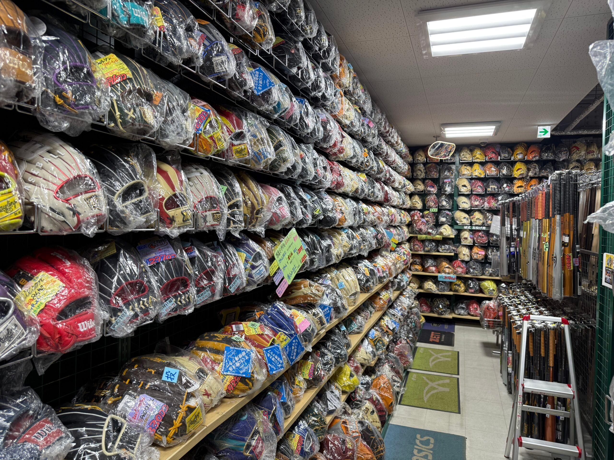

Six Unforgettable
Experiences
Every tour is handcrafted around six signature experiences — each offering a window into a side of Japan that most travelers never see.
NPB Live Games
Feel the electric atmosphere of Japan's professional baseball league. Synchronized cheer squads, brass bands, stadium food — an experience unlike anything in the US.
Koshien Stadium
Visit the most sacred ground in Japanese baseball. Whether watching the high school tournament or touring the iconic ivy-covered walls — Koshien moves every baseball soul.
Baseball Equipment Factory Tour
Step inside Japanese glove and bat factories where master craftsmen have been perfecting their trade for generations. Witness the art of baseball equipment making up close.
Glove Making Experience
Sit alongside a master artisan and create your own custom baseball glove by hand. A one-of-a-kind souvenir you'll treasure for life, crafted in the Japanese tradition.

Baseball Equipment Shop Tour
Your expert guide takes you to Japan's finest baseball equipment stores — many unknown to outsiders — where you'll find gloves, bats, and gear unavailable anywhere else in the world.
Play & Practice with Japanese Teams
For players: join joint practice sessions and exhibition games with local Japanese clubs. Learn their legendary techniques, discipline, and baseball philosophy on the field.